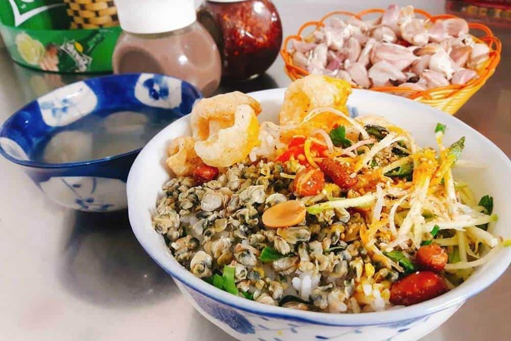

Đã mắt, ngon miệng với món bún hến xứ Huế
Một bát cơm huế đúng chuẩn “Huế” phải là cơm nguội để qua đêm, như vậy mới có thể giữ được cái giòn của rau và hương thơm của các gia vị. Đúng với tính cách “ăn cay nói nặng” của người Huế, món đặc sản Huế này phải đủ vị, mặn mà và đặc biệt là phải cay thật cay. Khi đến Huế, nếu bạn không dặn kỹ thì bát cơm hến của bạn đảm bảo sẽ khiến bạn bỏng lưỡi mà thôi.

Hiện nay, bạn có thể dễ dàng ăn cơm hến, bún hến ở mọi tỉnh thành nhưng nếu đã từng một lần thử cơm hến ở Huế, bạn sẽ phải thốt lên rằng “Đây mới là cơm hến đúng chuẩn!”. Cũng có lẽ vì cái cay, cái đậm đà hương vị đó mà món đặc sản Huế cơm hến này khiến người khác nhớ mãi không thôi.